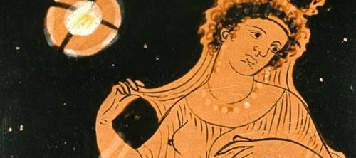
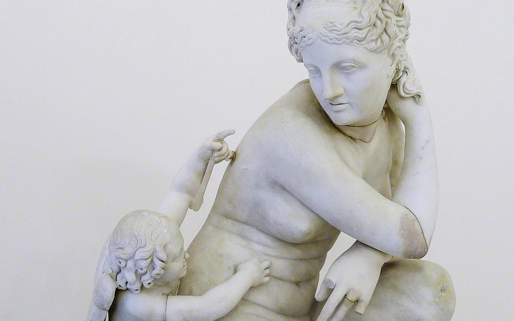
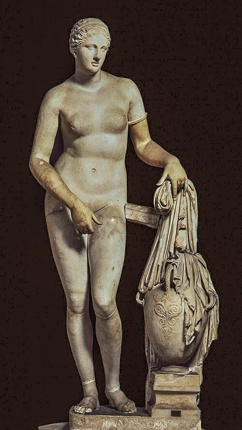
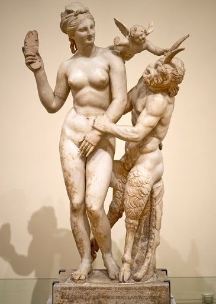
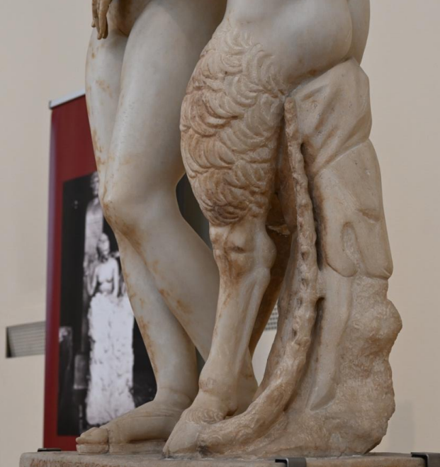
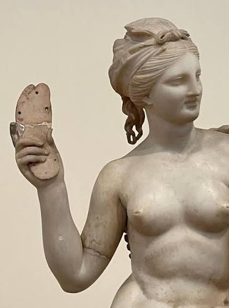
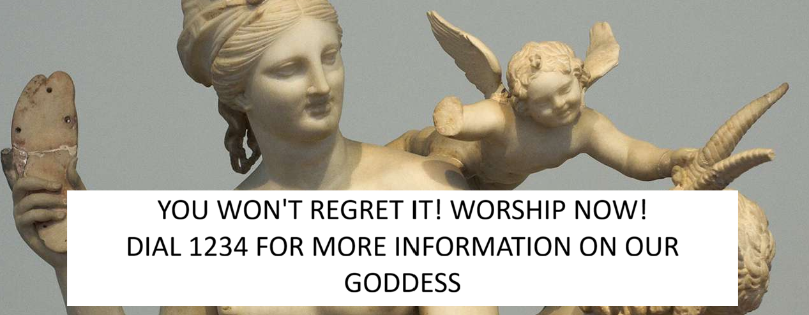
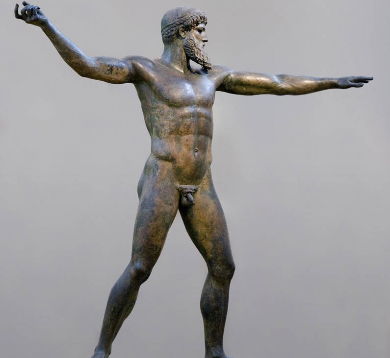
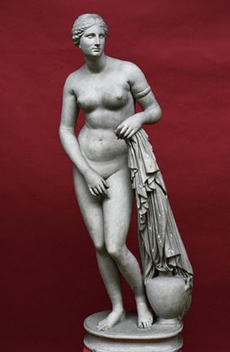
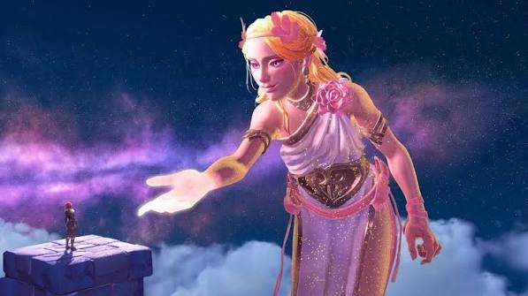

Campaign claim
Aphrodite wins because attention is guaranteed.
Her artworks show desire as a divine force: soft marble, controlled vulnerability, feminine authority, and the ability to command the viewer without violence.
Client file 01
Do you want love? Do you wish to be desired?
Public position
Aphrodite builds her case through beauty, desire, contrapposto, modesty, and comparison with gods who need weapons to prove their power.
Campaign pitch
Her artworks show desire as a divine force: soft marble, controlled vulnerability, feminine authority, and the ability to command the viewer without violence.
Campaign claim
Her artworks show desire as a divine force: soft marble, controlled vulnerability, feminine authority, and the ability to command the viewer without violence.
Evidence exhibits
Each exhibit keeps the original client text with the matching Aphrodite image. The modern media section appears independently at the end.


Exhibit 01
Divine Rebrand Agency DO YOU WANT LOVE? DO YOU WISH TO BE DESIRED? WHEN WAS THE LAST TIME YOU FELT ROMANTICALLY SEEN? VOTE FOR APHRODITE NOW AS A CURE TO YOUR LACK OF LOVE, DESIRE, AND BEAUTY! It takes a special sort of comeliness to embody the trait of beauty itself. Yet Aphrodite, radiant goddess of love and desire, makes it seem effortless. Born from seafoam and sunlight, she glides with an elegance that bends hearts before words are even spoken. Her presence alone softens the hardest of souls and awakens longing in even the most distant eyes. Aphrodite, goddess of love and beauty, is among the frequently represented female figures in ancient art, particularly in Classical and Hellenistic sculpture. The repeated obsession she captures in creative minds over centuries is unmatched in marble, paint and mosaic. In works such as the Aphrodite of Knidos, she is often depicted in a naturalistic contrapposto stance, partially nude in a way that emphasizes both idealized anatomy and divine modesty, a contradictory depiction of both modest and display that heightens the viewer's awareness of her form. She is thus not only a depiction of beauty, but a missionary between the planes of divine reverence and erotic fascination. The soft curvature of her body, smooth marble surface, and downward gaze create a sense of intimacy and controlled vulnerability, marking a shift in Greek sculpture toward more humanized representations of divinity. Some scholars argue this invites contemplation, while others would say it simply makes her impossible to ignore. Either way, attention is guaranteed. "Love is powerful. It can bring the gods to their knees." — Rick Riordan, The Heroes of Olympus

Exhibit 02
SOME DAZZLING WORKS OF ART DONE OF OUR GODDESS The Aphrodite of Knidos, created by the sculptor Praxiteles in the 4th century BCE, is considered one of the most important breakthroughs in Classical Greek sculpture. Praxiteles is known for introducing softer, more sensual forms compared to earlier rigid Classical ideals, and the Knidian Aphrodite is the clearest example of this shift. The statue is often identified as the first major nude female statue in Greek art, marking a radical departure from earlier traditions where female divinities were typically shown fully clothed. This connects to the broader 4th-century movement away from strict idealized abstraction toward more naturalistic and human-centered representation. Although Aphrodite is a goddess, she is captured here in an intimate, almost human moment, covering herself as if interrupted in her moment of preparing for a bath. Formally, the statue uses contrapposto, with a shifting weight that creates a naturalistic S-curve in the body. This reflects the Classical concern with rhythm (rhythmos) and movement. Simultaneously, her modest gesture creates a tension between concealment and display: by covering herself, the eternal goddess appears mortal and vulnerable, and draws attention to the body she tries to hide. The viewer almost feels intrusive, as though witnessing a private moment, highlighting the statue's ability to balance divine modesty, sensuality and human immediacy. The statue is strong evidence for Aphrodite's lasting influence over the heart of mankind. Praxiteles turned her into the image of beauty itself: graceful, desirable, untouchable yet impossibe to ignore. A relic of ancient worship persists into the modern era, echoing a simple message: desire still rules. "The Aphrodite of Knidos" (4th century BCE)




Exhibit 03
“Slipper Slapper” (c. 100 B.C.E.) In the Slipper Slapper created in 100 B.C.E by an unknown artist, Aphrodite stands in a calm, controlled contrapposto pose, while Pan, the god of wild shepherds and flocks, reaches toward her in a moment of physical desire. Pan is seated on a stump-like support draped with an animal skin, which serves as a cushion. He is positioned near Aphrodite, nearly straddling her (Freissle, 2025, p. 12). He grasps her left hand, which is covering her pubic area in an attempt to reject his advances. Aphrodite’s expression and posture remain composed and detached, her face showing a slight grimace of disgust. She raises a slipper, ready to strike the goat god. Here, Aphrodite is not simply an objective of a desire, but a feminine figure of control. Although Pan attempts to approach her physically, Aphrodite remains visually and emotionally dominant. Her nudity does not weaken her authority; her composed posture and decisive gesture make clear that beauty belongs to her. Pan represents uncontrolled physical instinct, but Aphrodite refuses to be overtaken by it. She remains graceful and firmly in command of her figure. Eros, Aphrodite's son, appears between them and attempts to separate the interaction. His presence reminds the viewer that love and desire belong to Aphrodite's divine family and authority. Even desire itself acts in support of her boundaries. Her feminine power is on full display. She is not merely desired, but respected, defended and obeyed. Pan’s role is to represent a very different kind of desire. His body is heavily textured and bestial, with goat legs, horns, and a tense, forward-leaning posture that contrasts sharply with Aphrodite’s smooth and idealized form. He brings a raw, uncontrolled energy stemming from his status as a rustic god associated with shepherds, the wilderness and animal nature. Simultaneously, he is lower, seated and physically awkward, making him appear less dignified despite his advances. His posture almost comes off as comedic, looking impulsive and ridiculous, unable to match her authority and grace. He acts boldly, but holds no control. What makes this sculpture particularly interesting is how it visualizes femininity and desire as forces governed by divine authority rather than something freely accessible. Aphrodite is presented not as passive or vulnerable, but as fully in control of the situation, reinforcing her status as a powerful and authoritative figure. She is resisting objectification and actively directing the interaction, embodying the idea that attraction and desire ultimately revolve around her influence and agency. The statue reminds us of what it means to be the goddess of beauty. Desire is her domain. She inspires it and sets its limits. Aphrodite demonstrates that femininity is not something to be conquered or dominated, but something owned by the individual. Beauty may attract attention, but true power belongs to the woman that controls it.
Exhibit 04
NOT CONVINCED? WELL, LETS COMPARE HER TO SOME OTHER GODS! Let's compare The Aphrodite of Knidos by Praxiteles with the Zeus (or Poseidon) of Artemision. These two sculptures reveal two dramatically different approaches to representing the divine in Classical Greek art. While one emphasizes overwhelming strength and action, the other presents divinity through beauty, restraint, and the quiet power of presence. These two sculptures demonstrate how Greek artists explored different ways a god could command the attention of the viewer.

The Zeus of Artemision, a large bronze sculpture dating to around 460 B.C., presents divine power through movement, physical force and spatial command. It captures the god at the peak of physical intensity. His arm extends outward, frozen in the moment before he releases his weapon, creating a sense of unstoppable force. The wide stance, engaged musculature, and open composition emphasize movement and dominance, emphasizing Zeus as an active and commanding ruler. His authority is expressed through outward force, his body projecting power into the surrounding space. Because of the dynamic pose, the sculpture cannot be fully understood from a single viewpoint. The viewer must move around the figure to fully experience its form and impact, as its dynamic posture unfolds differently from multiple angles and cannot be understood from a single fixed viewpoint. His divinity is thus communicated through physical dominance, dramatic motion and the anticipation of action. Zeus's masculinity is displayed through conquest and action, but Aphrodite's influence requires no weapon or gesture. Why worship a god who must raise a weapon to prove his power, when Aphrodite can command the world with nothing but her presence? Zeus may rule through strength, but Aphrodite rules through beauty, desire, and influence. His power is shown in a single moment of action, hers exists simply by being seen.

The Aphrodite of Knidos, sculpted by Praxiteles of Athens around the 4th century BCE, presents a very different model of divine presence Classical Greek culture. Rather than emphasizing warfare, command or physical domination, the sculpture captures her power through beauty, desire, and the ability to inspire human emotion. The sculpture's depicts the goddess nude, in a private moment associated with bathing, creating a more intimate relationship between the viewer and the divine figure. Her relaxed contrapposto stance, with its gentle curve and relaxed posture, emphasizes harmony and idealized feminine beauty rather than physical strength. Unlike the Zeus of Artemision, whose meaning depends on movement through space, the Aphrodite of Knidos is more self-contained and frontal, allowing the viewer to appreciate the body as a complete and unified image. Her power is not shown through violent action, but through the ability to attract, captivate, and inspire desire. The popularity of the Aphrodite of Knidos demonstrates how her image became a representation of feminine beauty and divine influence. From a formal perspective, Zeus embodies an earlier Classical emphasis on heroic anatomy and rhythmos pushed to dramatic extremes. However, this emphasis on action comes at the cost of intimacy. This statue feels stagnant in emotion. Aphrodite, on the other hand, reflects the 4th-century shift toward more humanized and experiential sculpture, where divine figures become psychologically accessible. Her composition does not rely on overwhelming scale or aggression but instead draws the viewer into a controlled visual encounter.
CLICK THESE LINKS FOR MORE! (they're not actually links) "Do you want a date tonight? Don't leave it to chance! Try praying to Aphrodite! When she answers, desire will find its way to you." "Feeling unseen? Aphrodite doesn't believe in invisibility. Wear her blessing and become unforgettable." CLICK HERE FOR LOVE POTION RECIPE!
Final verdict
Modern connection

Modern connection
MODERN MEDIA INVOLVING OUR GODDESS Aphrodite’s influence extends far beyond ancient Greek sculpture, as her image continues to appear in modern games and films that reinterpret her role as a goddess of beauty, love, and desire. HADES In the video game Hades, Aphrodite is portrayed as one of the Olympian gods who aids the protagonist, using her powers of charm and attraction to weaken enemies. Her appearance includes long, flowing hair in shades of pink and blonde, cascading around her body. A confident, relaxed pose, often reclining as though floating effortlessly. Minimal clothing, with her body partially concealed by her hair, jewelry, flowers, and decorative ribbons rather than conventional garments. The artwork is suggestive but not explicit. Her portrayal reflects her traditional role as a goddess of love and desire, while also presenting her as a powerful figure whose influence comes from emotional and psychological strength rather than physical force. Immortals Fenyx Rising Immortals Fenyx Rising reimagines Aphrodite within a humorous and adventurous retelling of Greek mythology. Her appearance is generally characterized by bright, vibrant coloring, fitting the game's stylized fantasy aesthetic and long pink hair, often depicted as voluminous and flowing. The game explores her identity as a goddess of love and beauty while showing her personality, relationships, and influence among the gods. This demonstrates how modern adaptations continue to reinterpret Aphrodite beyond her appearance, emphasizing her role and importance within mythology. PERCY JACKSON In the film Percy Jackson & the Olympians: The Lightning Thief, Aphrodite does not make a direct on-screen appearance. However, her presence is implied through the film's adaptation of Greek mythology, where the Olympian gods remain important figures within the story's world. As the goddess of love, beauty, and desire in Greek mythology, Aphrodite represents themes that continue to be familiar to modern audiences. Her inclusion within the broader mythological setting demonstrates how ancient Greek deities remain relevant in contemporary popular culture, even when they are not central characters in the narrative.
Evidence archive
References: 1. Freissle KE. The Delian “slipper slapper” group (c. 100 B.C.E.) and feminine power by. Scholarsbank. 2025 [accessed 2026 Jun 20]. https://scholarsbank.uoregon.edu/server/api/core/bitstreams/08ddcb1a-a10c-48ee-9a03-25a96120a1ff/content